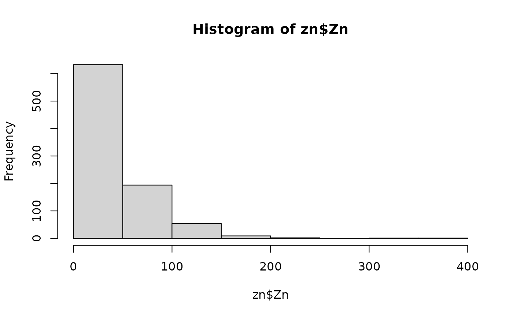
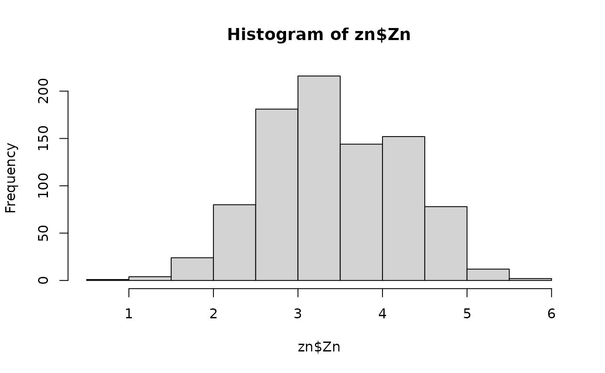

Computationally optimized function for geographically optimal similarity (GOS) model
Arguments
- formula
A formula of GOS model.
- data
A
data.frameortibbleof observation data.- newdata
A
data.frameortibbleof prediction variables data.- kappa
(optional) A numeric value of the percentage of observation locations with high similarity to a prediction location. \(kappa = 1 - tau\), where
tauis the probability parameter in quantile operator. The default kappa is 0.25, meaning that 25% of observations with high similarity to a prediction location are used for modelling.- cores
(optional) Positive integer. If cores > 1, a
parallelpackage cluster with that many cores is created and used. You can also supply a cluster object. Default is1.
Value
A tibble made up of predictions and uncertainties.
predGOS model prediction results
uncertainty90uncertainty under 0.9 quantile
uncertainty95uncertainty under 0.95 quantile
uncertainty99uncertainty under 0.99 quantile
uncertainty99.5uncertainty under 0.995 quantile
uncertainty99.9uncertainty under 0.999 quantile
uncertainty100uncertainty under 1 quantile
References
Song, Y. (2022). Geographically Optimal Similarity. Mathematical Geosciences. doi: 10.1007/s11004-022-10036-8.
Examples
data("zn")
# log-transformation
hist(zn$Zn)

zn$Zn <- log(zn$Zn)
hist(zn$Zn)

# remove outliers
k <- removeoutlier(zn$Zn, coef = 2.5)
#> Remove 9 outlier(s)
dt <- zn[-k,]
# split data for validation: 70% training; 30% testing
split <- sample(1:nrow(dt), round(nrow(dt)*0.7))
train <- dt[split,]
test <- dt[-split,]
system.time({
g1 <- gos(Zn ~ Slope + Water + NDVI + SOC + pH + Road + Mine,
data = train, newdata = test, kappa = 0.25, cores = 1)
})
#> user system elapsed
#> 0.290 0.020 0.311
test$pred <- g1$pred
plot(test$Zn, test$pred)
cor(test$Zn, test$pred)
#> [1] 0.5272951